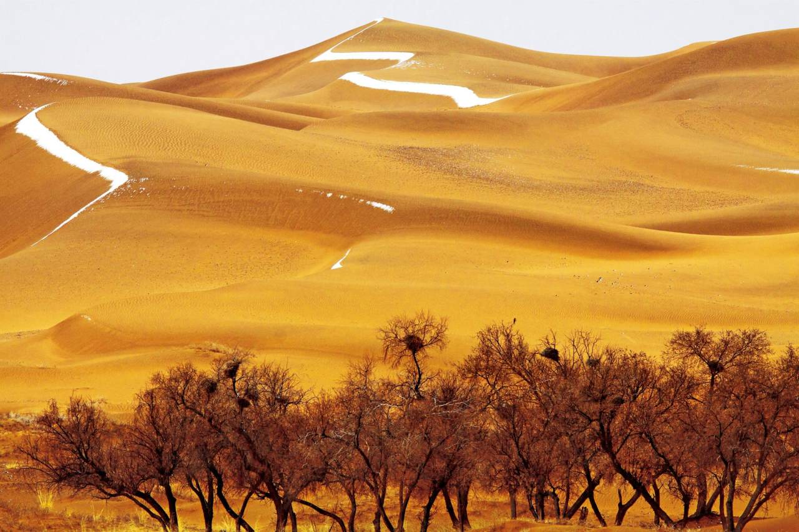
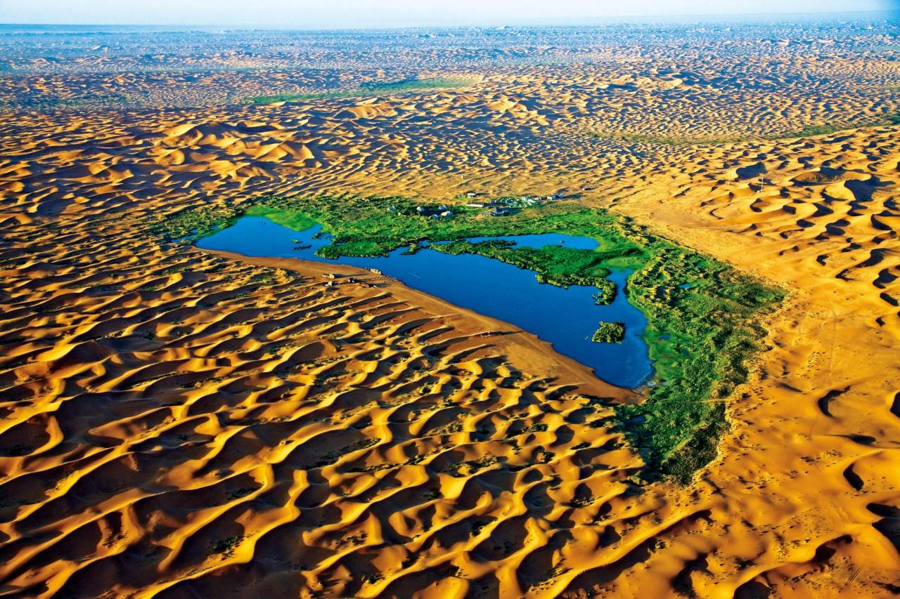
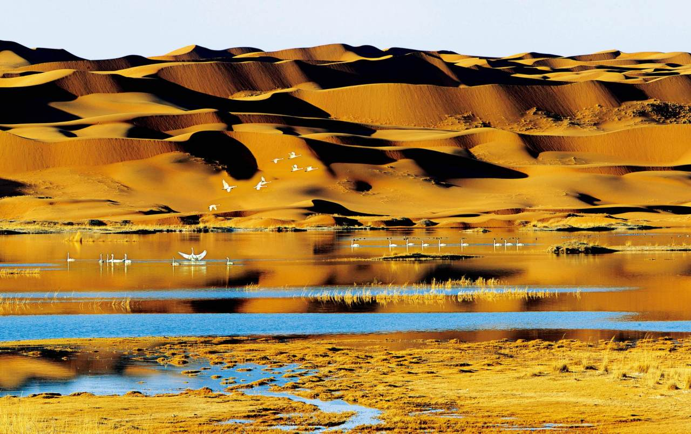
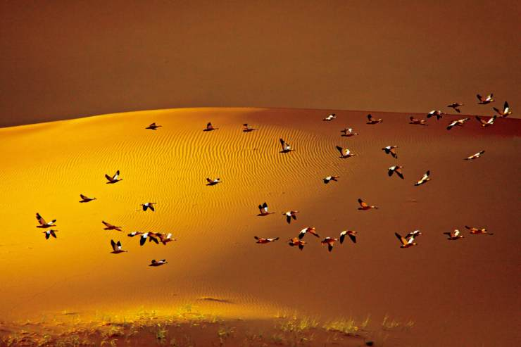

它占据超过陆地30%的面积，并曾经大有无法控制之势，不过随着人们的努力，它的危害减小了很多。
沙漠，主要是指地面完全被沙所覆盖、植物非常稀少、雨水稀少、空气干燥的荒芜地区。
沙漠亦作“沙幕”，干旱缺水，植物稀少的地区。沙漠地域大多是沙滩或沙丘，沙下岩石也经常出现。

有些沙漠是盐滩，完全没有草木。沙漠一般是风成地貌。沙漠里有时会有可贵的矿床，近代也发现了很多石油储藏。
有时沙漠中会出现绿洲，那是生物的天堂。
它也是考古学家的乐居，可以找到很多人类的文物和更早的化石。

即便如此，仍有不少生物和沙漠有密切关系。
就比如被誉为“候鸟先锋”的赤麻鸭，它是最早从北方向南方迁徙的候鸟，跨越数千公里的远征需要强健的翅膀，所以在腾格里沙漠繁殖后代的赤麻鸭，从来没有懈怠过飞行训练，它们以家族群为单位，飞越沙丘和湖泊，为秋天的迁徙积蓄着力量。
